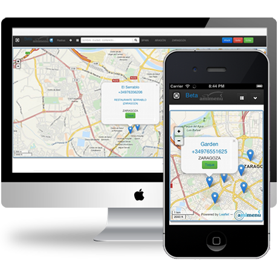

We're working hard on the next Amimenu.
Amimenu is an application that make you discover where to eat. You only have to tell us where you are and we show you the restaurant around. You also can add your restaurant´s special dishes and photos.

Amimenu is open and change every day. You don´t need to register, only 2 minutes you can recommend us the restaurant you love and all the people could see in the application.
We usually are in the streets looking for restaurants and we can not decide where to go. Now you could use it as web app in you iPhone or Android mobile and Amimenu find the best restaurant for you. Now you can make "Toque" in order to recive a call from the restaurant.
Amimenu let you know what restaurant and what deals you have around and in real time. If you are managing a restaurant, you could send push messages to online users (mobile and web). New restaurants every day, new menus every hour and more and more events every second. Share on Facebook, Twitter or Google+.
We are looking people to make Amimenu bigger and better, please send us an email to join us.
Working on it (right now). As soon as possible you could use amimenu in your apps.